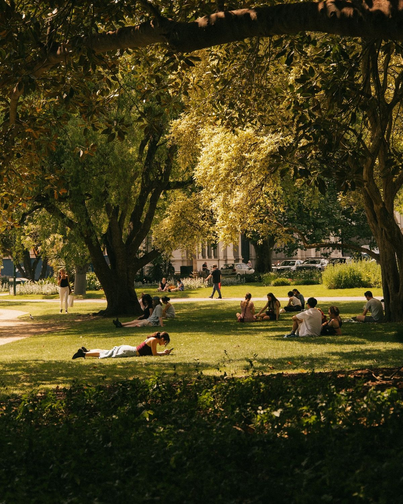
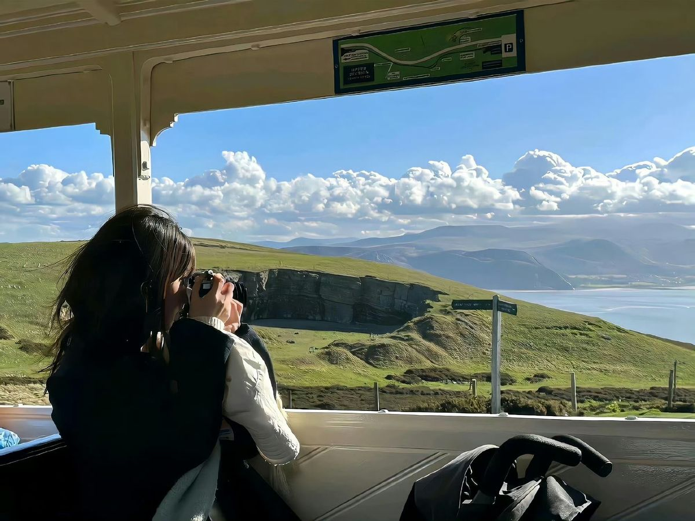
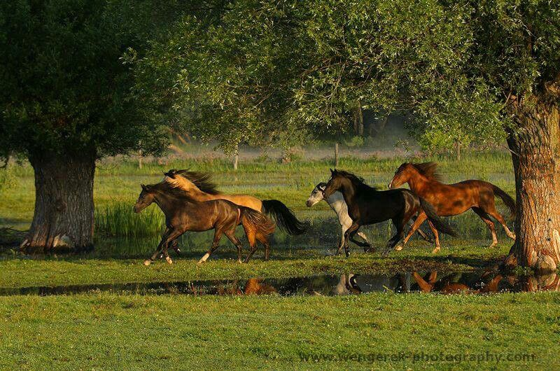

People
A slow afternoon, a few familiar faces. Ordinary moments have a way of becoming memories.
I rarely plan what to photograph. Sometimes it's the light falling through the trees. Sometimes it's a place I almost walked past. I stop, take a photo, and wonder how much else I've missed.
A photo won't tell you what the air felt like or what happened a second later. I like that. It leaves a little room for memory, and a little room for imagination.
A slow afternoon, a few familiar faces. Ordinary moments have a way of becoming memories.
I never mind the long way home when there is a view worth stopping for.
They move on before I can take another photo. One frame is all I get to keep.
A few places I like to return to, with my camera in hand.
Parks, little conversations and the light just before evening.
Open windows, unfamiliar paths and a reason to keep looking outside.
A little distance from the city, where the day follows its own pace.

People
Everyone has somewhere to be. For a little while, this patch of sunlight is enough.

Nature
The view changes with every turn. I keep wondering what waits beyond the next hill.

Animals
They run as if they know exactly where they belong. I watch until they disappear between the trees.